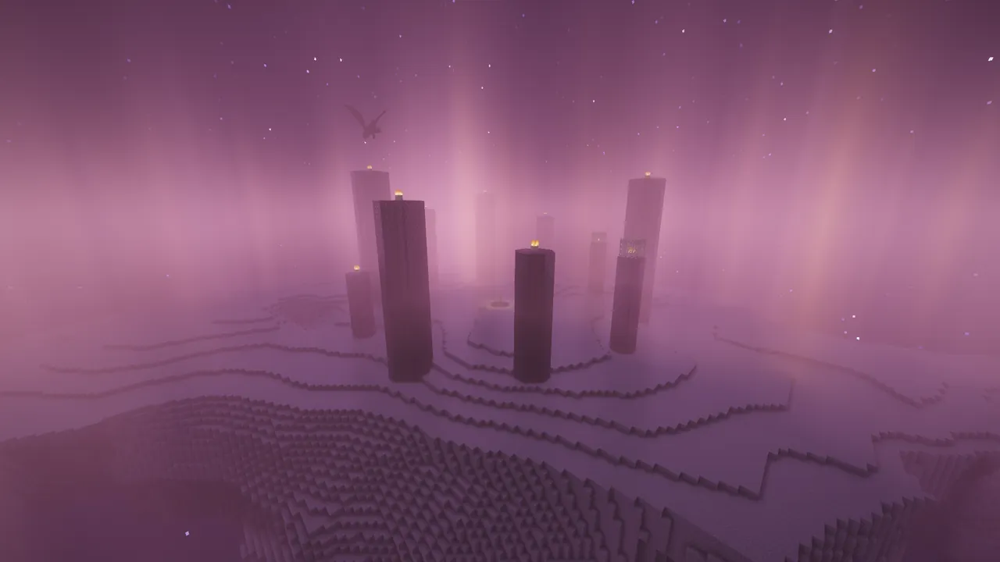

60 días
Cada día distinto que entras desbloquea un premio en /pase. No tienen que ser seguidos.

El pase
- 1
- 2
- 3
- 4
- 5
- 6
- 7
- 8
- 9
- 10
- 11
- 12
- 13
- 14
- 15
- 16
- 17
- 18
- 19
- 20
- 21
- 22
- 23
- 24
- 25
- 26
- 27
- 28
- 29
- 30
- 31
- 32
- 33
- 34
- 35
- 36
- 37
- 38
- 39
- 40
- 41
- 42
- 43
- 44
- 45
- 46
- 47
- 48
- 49
- 50
- 51
- 52
- 53
- 54
- 55
- 56
- 57
- 58
- 59
- 60
- 1
- Pan y antorchas para empezar.
- 10
- Una llave rara y dos diamantes.
- 25
- Una llave épica.
- 30
- Un tótem, dos llaves raras y seis diamantes.
- 47
- Una manzana dorada encantada.
- 50
- Una llave legendaria y tres bloques de diamante.
- 60
- La Leyenda Retorcida.
Leyenda Retorcida
Clan: Lobos
Días: 23
Pase: 23/60
Llaves: 4
Conectados: 12
Tu progreso va siempre a la derecha de la pantalla. /marcador lo esconde.
El día 60: Filo Retorcido, una espada de netherite con Filo VII, Botín IV, Aspecto ígneo II, Filo arrasador IV, Irrompibilidad V y Reparación.
También las Alas Retorcidas (élitros con Irrompibilidad V y Reparación), dos llaves legendarias, tres tótems y un faro.
Parabellum
El launcher gratis de la comunidad, para Windows y Mac. Es la forma más cómoda de jugar en Retorcidos.
- Tu skin, para todos
La skin que pones en Parabellum se ve en el server, y la ven todos: los de otros launchers y los de Bedrock.
- El modpack oficial
Sodium e ImmediatelyFast para más FPS, Iris para shaders, JEI y Jade. Se instala solo al pulsar Jugar en la comunidad.
- La comunidad
Las reglas y los anuncios de Retorcidos, en el mismo lugar donde abres el juego.
Entra hoy
Copia la dirección, agrégala en Multijugador (o en Servidores, en Bedrock) y nos vemos en la plaza.
retorci2.play.hosting
springblossom.wdn.ggpuerto 443
Versión 26.3. Si nadie está jugando, el server se duerme: entra desde Java, espera un minuto y vuelve a entrar. La primera vez, regístrate con /register.
De vuelta al Overworld
Regresar al Overworld